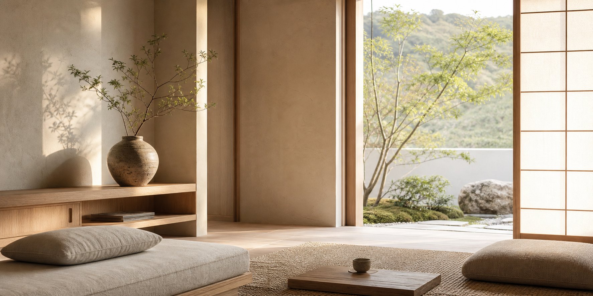

Listen
We map the pressure points of the home: the chair that gathers everything, the entry that never settles, the shelf that stopped feeling useful.

Spatial rituals for calmer homes
A quiet home reset for people who want their rooms to breathe again: edited objects, softened routines, and hand-finished details that make daily life feel deliberate.
For the overstimulated room
Mado is not decoration as performance. It is a practical, deeply considered service for compact homes, tired corners, and routines that have become too loud.
We refine the visible life of a space through placement, storage, material touchpoints, scent, light, and simple daily gestures.
The Mado method
We map the pressure points of the home: the chair that gathers everything, the entry that never settles, the shelf that stopped feeling useful.
Objects are reduced, paired, moved, repaired, or given a better place. The result is warm clarity, not a bare room.
We leave behind a small spatial ritual: a lighting cadence, a linen rotation, a ceramic catchall, a landing place for the day.
Quiet function
A custom shelf is only useful if the hand reaches for it naturally. A basket matters when it turns disorder into a single calm motion. We design around repeated touch, gentle upkeep, and the imperfect beauty of things used well.
A restrained palette with feeling
Mado favors materials that lower the pulse: matte surfaces, visible grain, softened edges, and colors borrowed from clay, garden shade, stone, and paper.
Warm plaster
Pale oak
Fired clay
Garden moss
What changes
A low catchment zone for shoes, keys, bags, and the day’s noise.
Negative space restored around the objects that still carry meaning.
Light, linen, and scent cues that help the evening land softly.
Limited seasonal resets
The first visit is a two-hour spatial reading. We observe, edit, and shape a practical plan before any object is purchased or moved with permanence.